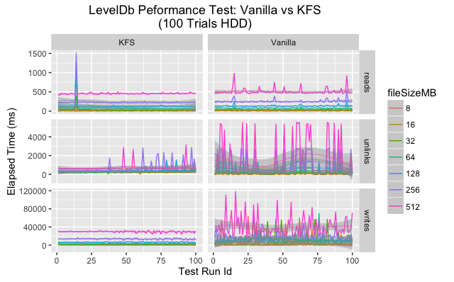
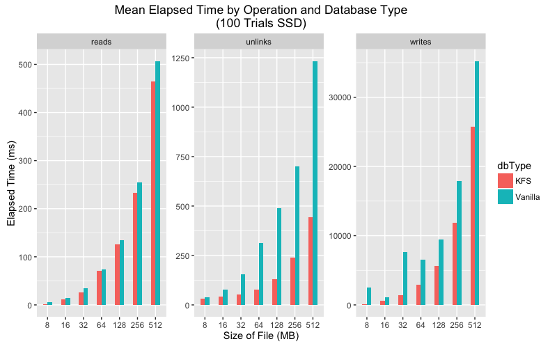
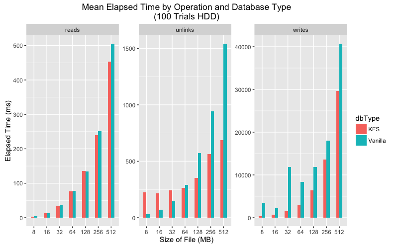
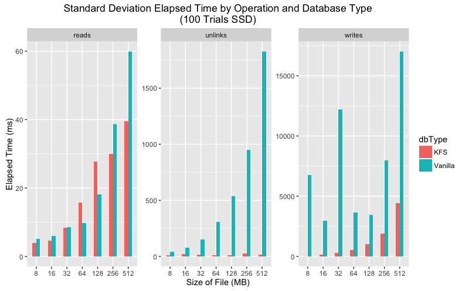
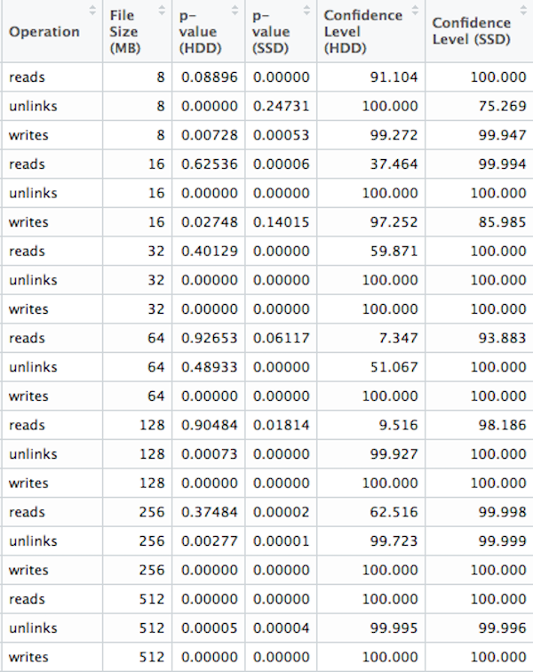

One major hypothesis of this project is that KFS enhances performance over the use a of a standard LevelDB instance. This is due to the nature of how KFS bounds the cost of LevelDB's compaction mechanism by sharding a data set over a series of size-capped LevelDB instances. A set of performance tests were run on a standard LevelDB along with our version which leverages KFS. This is a short summary of our findings and their implications.
Experiment Design
A series of one hundred trials were run in sequential order. Each trial consisted of measuring the execution time for a complete read, write, and unlink (delete) operation on file sizes of 8, 16, 32, 64, 128, 256 and 512 MiB. Keeping in mind that files are split into discrete 128KiB key/value pairs, keyed by a hash of the content of the entire file, this means that the actual number of read/write/delete operations are equal to the size of the file divided by 128KiB.
Of particular note is that each sequential test run adds approximately 1GiB to the full size of the database (since unlinks only tombstone entries). Our number of trials is consistent with our assertion that LevelDBs performance degrades significantly after the size of the database exceeds 100GiB.
This experiment was conducted for both a vanilla (standard) LevelDB and a version using the KFS protocol. In addition we ran the experiment using a hard disk drive (HDD) and solid state drive (SSD).
Results
An overview plot displaying the execution time by file size and operation for each trial indicates some difference between KFS and a vanilla LevelDB. At a high level it appears vanilla LevelDB had a higher variance across many categories. It is our belief that this variance is due to compaction triggering in LevelDB as the size of the single instance grows quickly.
Since data is spread in a uniform fashion across a series of LevelDBs in KFS, this compaction triggering happens less frequently and has a much smaller impact.


Upon closer inspection the data shows that in every category the mean execution time is lower for KFS for all categories. As for variance, the story is a bit more complicated. On SSD vanilla LevelDB has much greater variance than KFS for writes and unlinks but more consistent for reads. On HDD both KFS and vanilla show greater variance, but again KFS performs more consistently on writes and unlinks.
Mean execution time comparison for SSD and HDD.


Standard deviation execution time comparison for SSD and HDD.


We ran two sided significant tests on each combination of operation and file size with a p-value cut-off at .05. For reads at 8, 16, 32, 64, 128 and 256 MiB file sizes, along with unlinks at 64 MiB we are unable to reject the null hypothesis. Or in other words, we are unable to suggest KFS performs better than a vanilla LevelDb in those scenarios. For the rest, we did achieve a 95% confidence level. This suggests that our measurements are not the result of a statistical fluke and KFS introduces meaningful change for those operations and file sizes. Please note that any confidence level of 100% is an artifact of rounding. In this scenario a p-value of 0 is theoretically impossible.

Conclusion
While P-Values should not be followed blindly, the data does indicate that the KFS protocol gives statistically significant gains in speed and consistency.
To reproduce the data generated for these tests:
- Clone this git repository
- Make sure you have Node.js and NPM installed
- Run
npm installfrom the project root directory - Run
npm run benchmark [iterations] [path_to_write_results]
You can set the path to the database to create using the KFS_PERF_DIR
environment variable for testing on different types of drives. If no path to
write results to is specified, they will be written to stdout.
If you want to experiment with chunk size (discrete key/value pairs associated
with a file), modify the C constant in lib/constants.js.